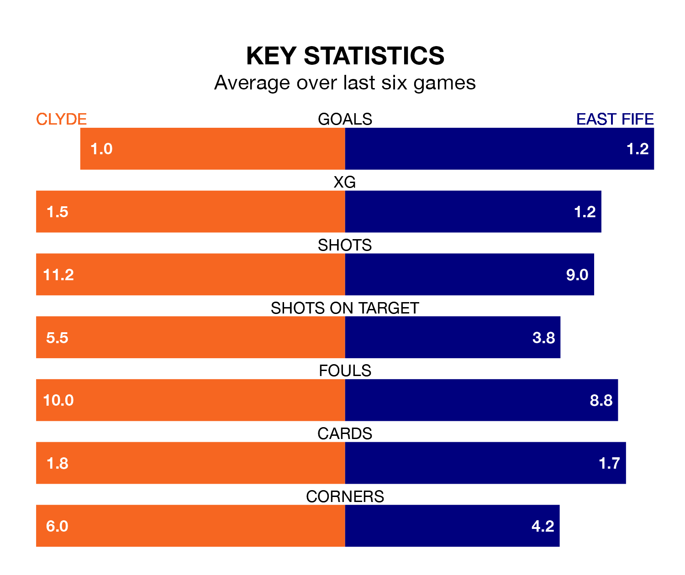

Clyde host East Fife on Saturday at the Fountain of Youth Stadium in League Two.
In their last league match, on April 20, Clyde drew with Stenhousemuir 2-2 at home, with goals from Barry Cuddihy and Robbie Leitch.
East Fife lost, 2-1 away at Forfar Athletic, with Liam Newton scoring their goals.
Clyde are bottom of the table after 34 games, of which they have won seven and drawn 11, earning 32 points.
East Fife are five places ahead of the Bully Wee in fifth, with 11 wins and 11 draws putting them on 44 points.
In the last 10 years, Clyde and East Fife have played each other on 23 occasions. Clyde won 10 of them, East Fife six, and they drew seven times.
On average, the Bully Wee scored 1.0 goals and the Fifers 0.9 in those matches.
Their last meeting was on January 13, when they played out a 1-1 draw.
In Nathan Austin, the Fifers have one of the league's most on-form strikers so far this season. He has notched 13 goals in 28 appearances, to sit third in the scoring charts.
His goal rate of one every 172 minutes is quicker than that of Martin Rennie, the hosts' top scorer with a goal every 200 minutes, and a total of 10 goals in 28 games.
With 42 goals in 34 games so far this season, Clyde are scoring at below the league average rate with 1.2 goals per game. And they are conceding more than average, letting in 58 goals at a rate of 1.7 per game.
The away team, meanwhile, are average scorers, with 1.3 goals per game. They have also conceded 1.3 goals per game.
Clyde are in mixed form in League Two, with two wins and two draws from their last six games.
And also with two wins and two draws over that period, East Fife's form is identical – they have both taken eight points from 18.
Updated: 07:59 (UTC), 26/04/24